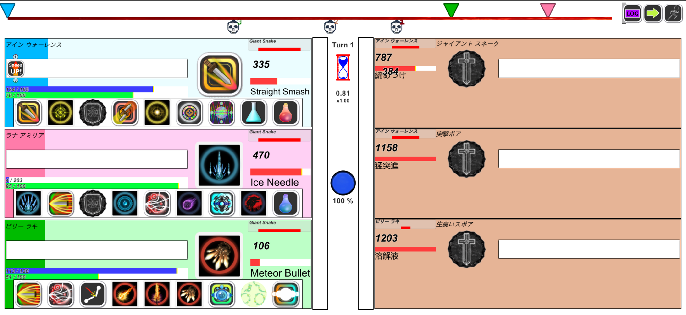
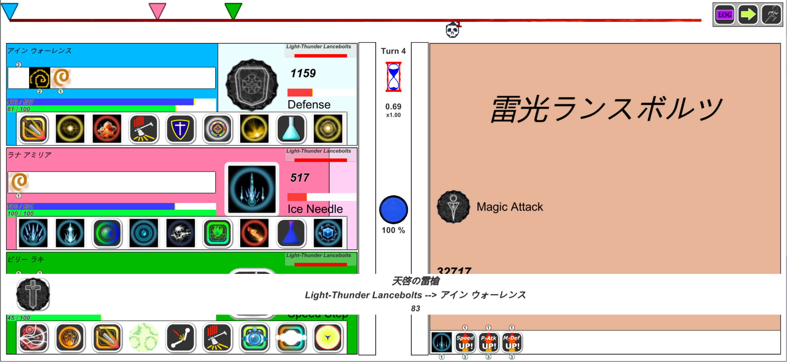

ゲームシステム
「ストーリー」
ある日、主人公アイン・ウォーレンスは遠征許可証を入手するため、ファージル宮殿へと向かう。
ファージル国王エルミ・ジョルジュから受けた依頼はObsidianStoneに関する情報の入手。
アイン・ウォーレンスは様々なダンジョンを攻略し、ObsidianStoneの追跡を行っていく。
その先に待ち受けているのは・・・

「基本システム」
ホームタウンでは、宿屋で休息を取り、武具屋に立ち寄って装備を整えましょう。
ダンジョンでモンスターと戦闘を行い、経験値、Gold、アイテムを手に入れましょう。
ストーリーを進め、無事ゲームクリアを目指しましょう。

「バトルシステム」
戦闘は時間進行に応じて行われます。戦闘は様々なアクションコマンドを使用する事で繰り広げられます。
戦闘におけるアクションコマンドの種類として、メイン行動とインスタント行動の２つがあります。
メイン行動： 戦闘ゲージ進行が進行し、ゲージが到達すると自動的にアクションが繰り出されます。
インスタント行動：インスタントゲージが蓄積し、ゲージが到達すると、任意のタイミングでアクションを繰り出せます。
基本的な行動はメイン行動に設定しておき、状況に応じて、インスタント行動を使いましょう。
バトル設定はアクションコマンド設定で設定できます。 「コマンド種別」について アクションコマンドは下記の種類があります。
バトル設定ではよく考えて慎重に設定すると良いでしょう。
ノーマル メイン行動でのみ実行可能です。インスタントタイミングで実行はできません。
インスタント インスタント行動として実行可能です。メイン行動としても実行できます。
ソーサリー インスタントゲージが塔達していた場合、メイン行動で実行できます。

「ボス戦／DUEL戦」
通常の戦闘と異なるモードとして、ボス戦とDUEL戦があります。通常戦闘との違いは下記の通りです。
ボス戦 ボスモンスターにインスタントゲージが設定されており、ゲージが到達すると、強力なエリミネイト・スキルを繰り出してきます。
DUEL戦 行動ゲージ開始位置が０地点から開始となります。また、DUEL中において時間停止ボタンが適用されなくなります。
ボス戦のエリミネイト・スキルに対しては、スタック・イン・ザ・コマンド属性のアクションを用いてスタックを積む事ができます。
上手く活用して致命的な攻撃に対して応対するようにすると良いでしょう。
また、DUEL戦ではインスタント行動が全てスタック・イン・ザ・コマンド属性となります。
メイン行動ゲージとインスタント行動ゲージの両方を把握する事が重要となります。

「その他」
※ゲーム起動時、アカウントIDを新規作成しますが、ゲーム進行上にアカウントIDが影響する事はありません。
アカウントIDはゲーム上の記録を保管するためにのみ使用しています。個人情報は含んでいません。